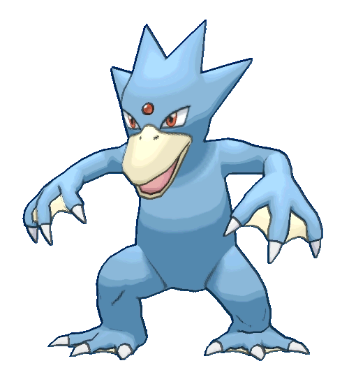

GOLDUCK #055
Golduck (Japanese: ゴルダック Golduck) is a Water-type Pokémon introduced in Generation I. Golduck evolves from Psyduck at level 33, known as the 'Duck Pokémon'.

Normal Golduck
.gif)
Shiny Golduck
Golduck is a blue, bipedal, duck, or platypus-like Pokémon. It has red eyes, a cream- colored beak, a red gem in the center of its forehead, and four spikes on the back of its head. Its hands and feet all have three clawed digits with cream-colored webbing in- between. Its body is especially adapted to have a hydrodynamic shape, and it has a long tail that it uses as a rudder to steer. Golduck is sometimes mistaken for the Japanese monster, and physical inspiration for Golduck, the Kappa due to its general humanoid shape, beak, and webbed hands and feet. Golduck is a fast swimmer, being capable of out-swimming even the most athletic of humans because of its webbed appendages. Even rough seas do not hamper this Pokémon's swimming abilities, and it will sometimes rescue people from shipwrecks. The gem on its forehead glows when it uses its psychic powers, and occasionally when it swims at full speed. In the past, this Pokémon was overhunted due to the belief that the gem granted people supernatural powers. As seen in the manga, Golduck has the ability to give knowledge to its Trainer and fellow Pokémon through telepathy. Golduck can typically be seen swimming in lakes, where it hunts fish. The prey is disabled, captured, and then brought to shore for consumption. Old tales claim Golduck punish those who defile their rivers by dragging them in and taking them away.
Evolution Chart